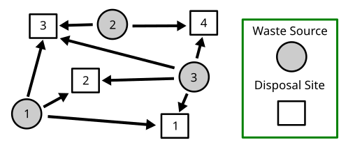
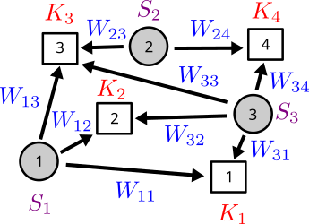
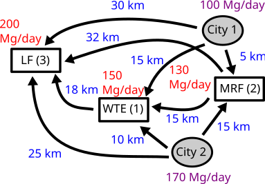
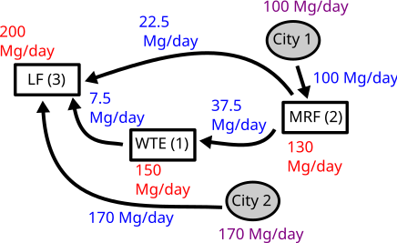

# The model as formulated on the previous slides
function waste_model(; landfill_capacity=capacity[3])
cap = [capacity[1], capacity[2], landfill_capacity]
model = Model(HiGHS.Optimizer)
set_silent(model)
@variable(model, W[1:2, 1:3] >= 0) # city i -> facility j [Mg/day]
@variable(model, R21 >= 0) # MRF residual -> WTE
@variable(model, R23 >= 0) # MRF residual -> LF
@variable(model, R13 >= 0) # WTE ash -> LF
@variable(model, Y[1:3], Bin) # facility operates?
@objective(model, Min,
sum(city_cost[i, j] * W[i, j] for i in 1:2, j in 1:3) +
cost_R21 * R21 + cost_R23 * R23 + cost_R13 * R13 +
sum(fixed_cost[j] * Y[j] for j in 1:3))
@constraint(model, city[i in 1:2], sum(W[i, :]) == waste[i])
@constraint(model, ash, R13 == ash_rate * (W[1, 1] + W[2, 1] + R21))
@constraint(model, residual,
R21 + R23 == (1 - recycle_rate) * (W[1, 2] + W[2, 2]))
@constraint(model, wte, W[1, 1] + W[2, 1] + R21 <= cap[1] * Y[1])
@constraint(model, mrf, W[1, 2] + W[2, 2] <= cap[2] * Y[2])
@constraint(model, lf, W[1, 3] + W[2, 3] + R13 + R23 <= cap[3] * Y[3])
return model
endSolid Waste and Network Models
Lecture 18
November 9, 2026
Review of Last Class
Indicator Variables and Mixed Integer Programming
Binary decisions need indicator variables \(u \in \{0, 1\}\):
- changes decision problem to mixed integer;
- write conditional constraints or objectives using indicators;
- basic solution algorithm is branch and bound.
Questions?
Text: VSRIKRISH to 22333
Solid Waste Management
Waste Load Allocation
Some relevant questions:
- Where do we send waste?
- What types of facilities do we build/operate?

Source: EPA
Waste Allocation As A Network
Waste moves as flows between waste sources and sinks (disposal sites) based on transportation networks.

Network Representation
Network and Decision Parameterization

| Variable | Definition |
|---|---|
| \(\color{purple}S_i\) | Waste produced at source \(i\) (Mg/day) |
| \(\color{red}K_j\) | Capacity of disposal \(j\) (Mg/day) |
| \(\color{blue}W_{ij}\) | Waste transported from source \(i\) to disposal \(j\) (Mg/day) |
Conservation at Each Node
Mass balance holds at each facility:
- A waste source does not hold onto any waste, \(\sum_j W_{ij} = S_i\),
- Incoming flows at a disposal facility have to balance with waste disposal and outflows of residual waste (e.g. material that cannot be recycled).
Waste Management Example
Example System

Three disposal options:
- Waste-to-Energy (WTE)
- Materials Recovery Facility (MRF)
- Landfill (LF)
Example System
We do not have to operate all facilities.
The MRF and WTE reduce waste mass but create residuals which must be further disposed of.
Decision Variables
What are our decision variables?
| Variable | Definition |
|---|---|
| \(W_{ij}\) | Waste transported from city \(i\) to disposal \(j\) (Mg/day) |
| \(R_{kj}\) | Residual waste transported from disposal \(k\) to disposal \(j\) (Mg/day) |
| \(Y_j\) | Operational status (on/off) of disposal \(j\) (binary) |
Objective: Minimize Costs
- Transportation: transporting waste has a per-weight cost \(a_{ij}\) ($/Mg-km) times the distance \(l_{ij}\) (km).
- Disposal: facilities have a fixed cost to operate \(c_j\) ($/day) and a variable tipping cost \(b_j\) ($/Mg).
\[\begin{aligned} Y_j &= \begin{cases}0 & \text{if facility } j \text{ is not operated} \\ 1 & \text{if facility } j \text{ is operated} \end{cases}\\ \text{Disposal cost} &= \sum_j \left[c_j \, Y_j + b_j \times (\text{everything arriving at } j)\right] \end{aligned}\]
Costs For Our Problem
| Facility | Fixed cost ($/yr) | Fixed cost ($/day) | Tipping ($/Mg) | Capacity (Mg/day) |
|---|---|---|---|---|
| WTE (1) | 900,000 | 2,466 | 60 | 150 |
| MRF (2) | 400,000 | 1,096 | 5 | 130 |
| LF (3) | 700,000 | 1,918 | 40 | 200 |
Transport costs $1.50/Mg-km. The MRF recycles 40% of what it receives, at $35/Mg recycled, and passes on the rest; the WTE leaves 20% of its input as ash.
Calculating the Objective
The objective adds up each facility’s fixed cost, the tipping on what arrives (and, at the MRF, the recycling cost), and the hauling, e.g. for the MRF:
\[ \begin{aligned} & \underbrace{1{,}096\,Y_2}_{\text{fixed cost}} + \underbrace{(5 + 0.4 \times 35)\,(W_{12} + W_{22})}_{\text{tipping and recycling}} \\ & + \underbrace{1.5\,(5\,W_{12} + 15\,W_{22})}_{\text{hauling in}} + \underbrace{1.5\,(15\,R_{21} + 32\,R_{23})}_{\text{hauling its residual out}} \\[0.6em] & = 1{,}096\,Y_2 + 26.5\,W_{12} + 41.5\,W_{22} + 22.5\,R_{21} + 48\,R_{23} \end{aligned} \]
Mass Balance for Sources and Residuals
Outflows from cities have to match produced waste:
\(W_{11} + W_{12} + W_{13} =\) 100
\(W_{21} + W_{22} + W_{23} =\) 170
Facilities can produce residual waste (outflows after processing):
WTE ash: \[R_{13} = 0.2\,(W_{11} + W_{21} + R_{21})\]
MRF residual: \[R_{21} + R_{23} = 0.6\,(W_{12} + W_{22})\]
Capacity Constraints
Need to modify capacity constraints to ensure that a closed facility receives no waste:
\[ \begin{aligned} \text{WTE:}& \quad W_{11} + W_{21} + R_{21} \leq 150\,Y_1 \\ \text{MRF:}& \quad W_{12} + W_{22} \leq 130\,Y_2 \\ \text{LF:}& \quad W_{13} + W_{23} + R_{13} + R_{23} \leq 200\,Y_3 \end{aligned} \]
The Full Problem
\[ \begin{aligned} \min_{\mathbf{W}, \mathbf{R}, \mathbf{Y}} \quad & 82.5\,W_{11} + 26.5\,W_{12} + 85\,W_{13} + 75\,W_{21} + 41.5\,W_{22} + 77.5\,W_{23} \\ & + 82.5\,R_{21} + 88\,R_{23} + 67\,R_{13} + 2{,}466\,Y_1 + 1{,}096\,Y_2 + 1{,}918\,Y_3 \\[0.4em] \text{subject to:} \quad & W_{11} + W_{12} + W_{13} = 100 \qquad \text{(City 1)} \\ & W_{21} + W_{22} + W_{23} = 170 \qquad \text{(City 2)} \\ & R_{13} = 0.2\,(W_{11} + W_{21} + R_{21}) \qquad \text{(WTE ash)} \\ & R_{21} + R_{23} = 0.6\,(W_{12} + W_{22}) \qquad \text{(MRF residual)} \\ & W_{11} + W_{21} + R_{21} \leq 150\,Y_1 \qquad \text{(WTE capacity)} \\ & W_{12} + W_{22} \leq 130\,Y_2 \qquad \text{(MRF capacity)} \\ & W_{13} + W_{23} + R_{13} + R_{23} \leq 200\,Y_3 \qquad \text{(LF capacity)} \\ & W_{ij},\, R_{kj} \geq 0, \quad Y_j \in \{0, 1\} \end{aligned} \]
Solving The Problem
The Data in Julia
# The example system: two cities, three facilities (1 = WTE, 2 = MRF, 3 = LF)
waste = [100, 170] # [Mg/day] produced by each city
capacity = [150, 130, 200] # [Mg/day] facility capacity
fixed_cost_year = [900_000, 400_000, 700_000] # [$/yr] if the facility operates
fixed_cost = round.(Int, fixed_cost_year ./ 365) # [$/day]
tipping = [60, 5, 40] # [$/Mg] handled at each facility
recycle_rate = 0.4 # fraction of MRF input recycled
recycle_cost = 35 # [$/Mg recycled]
ash_rate = 0.2 # WTE input left as ash
transport_rate = 1.5 # [$/Mg-km]
city_distance = [15 5 30; 10 15 25] # [km] from city i to facility j
mrf_to_wte, mrf_to_lf, wte_to_lf = 15, 32, 18 # [km] residual routes
# Cost of sending 1 Mg from city i to facility j: haul it, tip it, and
# (at the MRF) pay to recycle the fraction that is recovered
city_cost = zeros(2, 3)
for i in 1:2
for j in 1:3
city_cost[i, j] = transport_rate * city_distance[i, j] + tipping[j]
if j == 2
city_cost[i, j] = city_cost[i, j] + recycle_rate * recycle_cost
end
end
end
cost_R21 = transport_rate * mrf_to_wte + tipping[1] # MRF residual to WTE
cost_R23 = transport_rate * mrf_to_lf + tipping[3] # MRF residual to LF
cost_R13 = transport_rate * wte_to_lf + tipping[3] # WTE ash to LFWriting the Model in JuMP
Solving the Example in JuMP
Code
# The optimal flows, on/off decisions and cost of a solved model
function solution(model)
W, Y = model[:W], model[:Y]
R21, R23, R13 = model[:R21], model[:R23], model[:R13]
return (cost=objective_value(model), Y=round.(Int, value.(Y)),
W=value.(W), R21=value(R21), R23=value(R23), R13=value(R13),
lf_load=value(W[1, 3] + W[2, 3] + R13 + R23))
end
base_model = waste_model()
optimize!(base_model)
base = solution(base_model)
# The solution as a table
println("| Solution | Value |")
println("|:--|--:|")
println("| Cost (\\\$/day) | ", commas(base.cost), " |")
println("| \$Y\$ (WTE, MRF, LF) | ", join(base.Y, ", "), " |")
println("| \$W_{1j}\$, City 1 to WTE, MRF, LF (Mg/day) | ", join(fmt.(base.W[1, :]), ", "), " |")
println("| \$W_{2j}\$, City 2 to WTE, MRF, LF (Mg/day) | ", join(fmt.(base.W[2, :]), ", "), " |")
println("| \$R_{21}\$, \$R_{23}\$, \$R_{13}\$ (Mg/day) | ", join(fmt.([base.R21, base.R23, base.R13]), ", "), " |")| Solution | Value |
|---|---|
| Cost ($/day) | 26,881 |
| \(Y\) (WTE, MRF, LF) | 1, 1, 1 |
| \(W_{1j}\), City 1 to WTE, MRF, LF (Mg/day) | 0, 100, 0 |
| \(W_{2j}\), City 2 to WTE, MRF, LF (Mg/day) | 0, 0, 170 |
| \(R_{21}\), \(R_{23}\), \(R_{13}\) (Mg/day) | 37.5, 22.5, 7.5 |
The Optimal Plan’s Flows

| Flow | Mg/day |
|---|---|
| City 1 → MRF | 100 |
| City 2 → LF | 170 |
| MRF residual → WTE | 37.5 |
| MRF residual → LF | 22.5 |
| WTE ash → LF | 7.5 |
Shadow Prices for a MILP
- Shadow prices are not well-defined for MILPs as they are for LPs because an indicator variable can only switch between 0 and 1.
- One approach: Fix the indicators at their optimal values to produce an LP with the same solution.
- This LP’s shadow prices are conditional on that choice: they describe small changes with the same facilities running.
MIP Shadow Prices in JuMP
- By default,
JuMPreports no shadow prices for a MILP. fix_discrete_variables()fixes the indicator variables at the optimal values so the rest of the problem becomes an LP.
Conditional Shadow Prices
Code
# Fix the binaries at their optimal values and re-solve: an LP with the same solution
fix_discrete_variables(base_model)
optimize!(base_model)
# Sizes of the shadow prices: for a city, the cost of one more Mg/day of waste;
# for a facility, the saving from one more Mg/day of capacity
base_price = (city=-shadow_price.(base_model[:city]), wte=-shadow_price(base_model[:wte]),
mrf=-shadow_price(base_model[:mrf]), lf=-shadow_price(base_model[:lf]))
# Landfill space freed per Mg moved from the landfill to the WTE: its ash comes back [Mg]
space_per_Mg = 1 - ash_rate
# The table's sign: + if one more Mg/day raises the cost, - if it lowers it
signed(x) = x > 0.005 ? "+" * money(x) : (x < -0.005 ? "−" * money(-x) : "0.00")
println("| One more Mg/day of | Change in cost (\\\$/day) |")
println("|:--|--:|")
println("| City 1's waste | ", signed(base_price.city[1]), " |")
println("| City 2's waste | ", signed(base_price.city[2]), " |")
println("| WTE capacity | ", signed(-base_price.wte), " |")
println("| MRF capacity | ", signed(-base_price.mrf), " |")
println("| Landfill capacity | ", signed(-base_price.lf), " |")| One more Mg/day of | Change in cost ($/day) |
|---|---|
| City 1’s waste | +85.22 |
| City 2’s waste | +87.38 |
| WTE capacity | 0.00 |
| MRF capacity | 0.00 |
| Landfill capacity | −9.88 |
Moving 1 Mg to the WTE frees only 0.8 Mg in the landfill.
So each additional Mg/day of landfill capacity takes 1.25 Mg/day of MRF residual away from the WTE, saving $9.88/day.
What If the Landfill Were Expanded?
Code
bigger_capacity = 220
bigger_model = waste_model(landfill_capacity=bigger_capacity)
optimize!(bigger_model)
bigger = solution(bigger_model)
println("| Landfill capacity (Mg/day) | Cost (\\\$/day) | WTE | MRF | LF |")
println("|:--|--:|:--:|:--:|:--:|")
for (lf_capacity, r) in ((capacity[3], base), (bigger_capacity, bigger))
status = fill("open", 3)
for j in 1:3
if r.Y[j] == 0
status[j] = "**closed**"
end
end
println("| ", lf_capacity, " | ", commas(r.cost), " | ", join(status, " | "), " |")
end| Landfill capacity (Mg/day) | Cost ($/day) | WTE | MRF | LF |
|---|---|---|---|---|
| 200 | 26,881 | open | open | open |
| 220 | 24,539 | closed | open | open |
With 20 Mg/day more landfill capacity, the WTE closes and the system saves $2,342/day.
The landfill’s shadow price predicted a saving of only 20 × $9.88 = $198/day.
Limits on Trucking
City 2’s Trucks
Suppose City 2’s collection trucks also haul its waste to the facilities. We assume each carries 10 Mg, averages 40 km/h and takes 15 minutes to unload, so a load takes:
| From City 2 to | Hours per load | Truck-hours per Mg |
|---|---|---|
| WTE (10 km) | 0.75 | 0.075 |
| MRF (15 km) | 1.00 | 0.100 |
| LF (25 km) | 1.50 | 0.150 |
Limits on City 2’s Trucking Capacity
Sending all 170 Mg/day to the landfill takes 25.5 truck-hours a day. Suppose City 2’s trucks have only 24 hours.
This produces a new constraint:
\[0.075\,W_{21} + 0.100\,W_{22} + 0.150\,W_{23} \leq 24 \quad \text{(truck-hours/day)}\]
Re-Solving With the Truck Limit
Code
# The model as formulated, plus a limit on City 2's truck-hours [truck-hours/day]
function solve_with_truck_limit(fleet_hours)
model = waste_model()
W = model[:W]
@constraint(model, fleet, sum(hours_per_Mg[j] * W[2, j] for j in 1:3) <= fleet_hours)
optimize!(model)
result = solution(model)
truck_hours = sum(hours_per_Mg[j] * result.W[2, j] for j in 1:3)
fix_discrete_variables(model) # for the shadow price, as before
optimize!(model)
return merge(result, (truck_hours=truck_hours, fleet_price=-shadow_price(fleet)))
end
trucks = solve_with_truck_limit(fleet_limit)
println("| | No limit | $(fleet_limit) truck-hours |")
println("|:--|--:|--:|")
println("| City 2 → WTE (Mg/day) | ", fmt(base.W[2, 1]), " | ", fmt(trucks.W[2, 1]), " |")
println("| City 2 → LF (Mg/day) | ", fmt(base.W[2, 3]), " | ", fmt(trucks.W[2, 3]), " |")
println("| MRF residual → WTE (Mg/day) | ", fmt(base.R21), " | ", fmt(trucks.R21), " |")
println("| MRF residual → LF (Mg/day) | ", fmt(base.R23), " | ", fmt(trucks.R23), " |")
println("| City 2 truck-hours/day | ", fmt(base_truck_hours), " | ", fmt(trucks.truck_hours), " |")
println("| Cost (\\\$/day) | ", commas(base.cost), " | ", commas(trucks.cost), " |")| No limit | 24 truck-hours | |
|---|---|---|
| City 2 → WTE (Mg/day) | 0 | 20 |
| City 2 → LF (Mg/day) | 170 | 150 |
| MRF residual → WTE (Mg/day) | 37.5 | 17.5 |
| MRF residual → LF (Mg/day) | 22.5 | 42.5 |
| City 2 truck-hours/day | 25.5 | 24 |
| Cost ($/day) | 26,881 | 26,941 |
What Is a Truck-Hour Worth?
The truck limit’s shadow price is $40.00/day per truck-hour. One more truck-hour lets City 2 send 13.3 Mg/day to the landfill instead of the WTE, saving $3.00 per Mg.
Key Takeaways
Key Takeaways
- A network model’s decisions are flows on edges, constrained by conservation at each node.
- Waste facilities can produce residuals which need to be processed or disposed of at the next level of the waste disposal hierarchy.
- A flow constraint limits edges, not nodes, unlike mass-balance constraints.
Network Models Elsewhere
- Can have more advanced network models with highly-specified routes:
- Transportation networks
- Power transmission networks
- Pipeline networks
- Flows could also be bidirectional.
Upcoming Schedule
Next Classes
Wednesday, November 11: Lab 3, Mixed Integer Programming and Facility Siting in JuMP.
Monday, November 16: Quiz 5, then stochastic optimization and scenario trees.
Assessments
HW8: assigned Wednesday, due Thursday, November 19 (network models and waste allocation).
Project update: due Friday, November 13.
Quiz 5: Monday, November 16 (capacity expansion, mixed integer programming, and waste and network models).